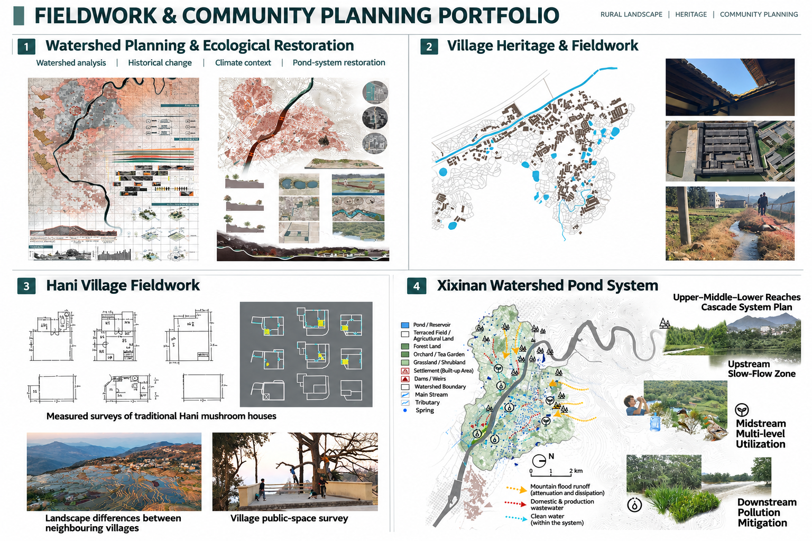

2021–2024
Community Planning & Fieldwork
Rural revitalisation practice projects · Team lead

Research motivation
How do accessibility and local environments shape everyday opportunities?
Working with residents, local officials and small businesses made accessibility and spatial inequality concrete concerns. These experiences reinforced my interest in computational research that remains connected to the communities and places it seeks to understand.
Work & methods
- Organised fieldwork and heritage planning projects in Longnan, Yuanyang, Huizhou and Lichuan.
- Worked with communities on practical planning questions concerning public spaces, infrastructure and local environments.
- Connected local experience with questions about accessibility and people’s everyday opportunities.
Related work
Fieldwork & planning gallery